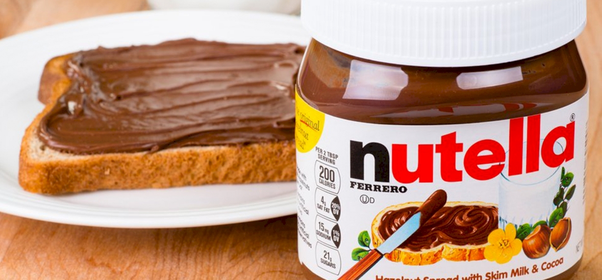

Reggeli rutin
Először felkelek 8 órakor, felöltözöm és megmosakodok.
Ezután megreggelizek. A reggeli legtöbbször joghurt, puding vagy
bundáskenyér. Reggeli után nekiállok tanulni. Bundáskenyér

Tanulás
Egy nap több tantárgyat is tanulok és ha végeztem egy tantárggyal,
akkor pihenek egy pár percet. Vannak olyanok, amiken órákig dolgozok,
de vannak, amikkel pár perc alatt végzek. Az, hogy milyen gyorsan megy
függhet attól is, hogy éppen kivel tanulok. Anyával nem megy túl jól a
tanulás, apával mondhatni jól megy, de mamával tudok a leghatékonyabban
tanulni. Ha végeztem a tanulással a nap hátralévő részében pihenek.
Pihenőidő
A pihenést általában telefonozással vagy laptopozással töltöm. Ilyenkor
videót nézek, játszok vagy mesét nézek. Ha éppen nem ezekkel töltöm a
szabadidőm, akkor olvasok, társasozok vagy a barátaimmal játszom.
Esti rutin
Az esti rutint vacsorával kezdem. Ez általában kalács, kenyér, joghurt
vagy puding. Ezután lefürdök és fogat mosok. Végül átöltözök pizsamába és lefekszek.
